A toilet tank usually gets ignored, but toilet tank decorating ideas can completely change the look of a small bathroom. I started paying more attention to this little spot when I realized how often a bathroom looked almost finished except for one awkward, completely empty toilet tank.
The trick, though, isn't to pile random stuff on top and call it decor. You want a few pieces that add personality without making cleaning annoying or interfering with the toilet itself. After trying different bathroom styling approaches over the years, I've found that simple, lightweight, genuinely moisture-friendly decor works best.
And honestly, who says the toilet area has to look boring?

How to Keep Toilet Tank Decor Clean
Bathroom decor needs more maintenance than decor in a dry living room.
Dust, humidity, water droplets, and cleaning products can quickly build up around accessories. I recommend removing the pieces regularly and wiping both the objects and the tank underneath them.
Moisture control really is a key part of preventing indoor mold growth generally. A simple cleaning routine can help:
- Remove all decorative pieces.
- Wipe the tank with an appropriate bathroom cleaner.
- Clean the decorative items according to their materials.
- Dry everything thoroughly.
- Return only the pieces you actually want.
If you notice persistent moisture, condensation, or leaks, deal with the source rather than simply wiping the surface.
Fixing water leaks and other water problems as soon as possible is really the practical advice here, for your bathroom as a whole, not just your toilet tank.
How I Would Style a Toilet Tank in a Small Bathroom
If I had a small bathroom and wanted a quick update, I wouldn't buy ten new accessories.
I'd start with a small wooden or stone tray, add one compact ceramic vase, and finish it with a small faux plant.
That's it.
The tray creates structure, the vase adds height, and the greenery adds life. The arrangement stays small enough that I can remove everything quickly when I clean.
For a modern bathroom, I'd switch the wood tray for a marble-look tray and use a black ceramic vase.
For a cozy bathroom, I'd use warm beige ceramics, natural wood, and soft greenery.
For a minimalist bathroom, I'd skip the tray entirely and use one beautiful ceramic piece.
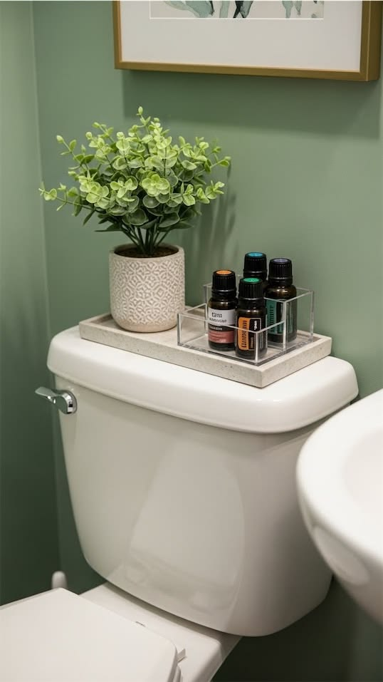
What Should You Avoid When Decorating a Toilet Tank?
Decorating the toilet tank sounds simple, but a few practical details matter.
First, don't block the flush button, handle, or tank lid. You should always have easy access to the toilet components.
Second, avoid extremely heavy objects. You don't need to turn the tank into a display shelf for your entire ceramic collection.
Third, think about moisture. Using a bathroom fan that vents to the outdoors, or opening a window during and after showers when conditions allow, genuinely helps.
That advice also helps your decor last longer. Better ventilation reduces the moisture that can contribute to mold and mildew.
I'd also avoid highly absorbent decorative materials if your bathroom stays humid for long periods. Easy-to-clean materials generally make more sense around a toilet.
16 Toilet Tank Decorating Ideas to Try
Now for the fun part. These toilet tank decorating ideas range from extremely simple to slightly more styled, so you can choose something that matches your bathroom rather than forcing your space into a particular aesthetic.
1. Keep It Completely Minimal
Sometimes the best toilet tank decorating idea involves barely decorating it at all.
Place one small plant or one attractive ceramic piece in the center and stop there.
I know, shocking. Not every surface needs five accessories fighting for attention.
A minimalist arrangement works particularly well in small bathrooms because it keeps the room visually open and makes cleaning much easier.
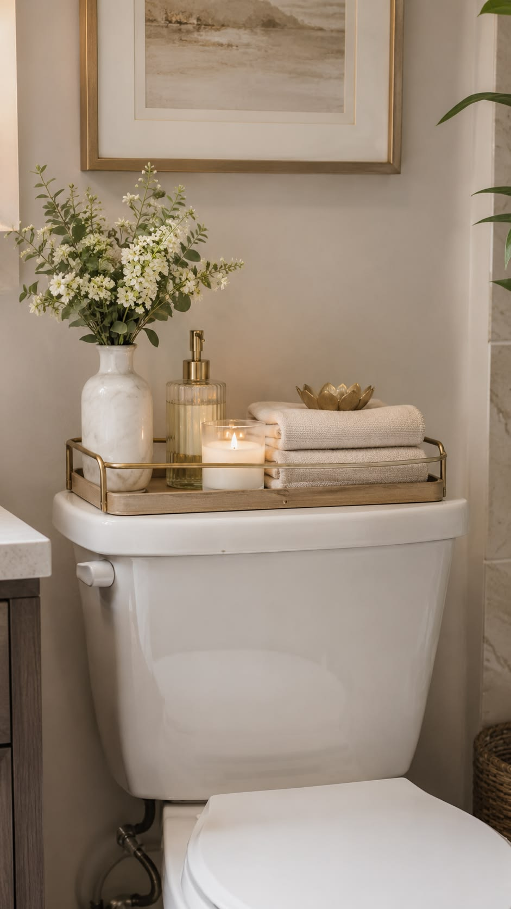
2. Match the Toilet Tank Decor to Your Bathroom Colors
One of the easiest toilet tank decorating ideas involves simply repeating colors that already exist in the room.
Look around your bathroom and pick one or two existing colors. For example:
- Beige bathroom: cream vase + wood tray + dried stems
- Gray bathroom: white ceramic + black accent + greenery
- Blue bathroom: white vase + blue candle + natural wood
- Green bathroom: cream ceramic + botanical stems + brass accent
This technique creates cohesion without requiring expensive accessories.
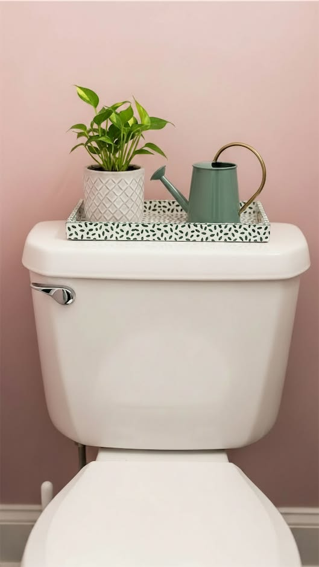
3. Create a Small Spa-Inspired Display
Want your bathroom to feel more like a little retreat?
Keep the toilet tank arrangement calm and simple. A small ceramic vase, eucalyptus stems, candle, and neutral tray can create that spa-inspired feeling.
I would stick with two or three colors maximum.
White, beige, green, and natural wood make an easy combination. Add soft towels nearby and suddenly the entire bathroom feels more intentional.
And yes, even the toilet area gets to participate in the spa fantasy.
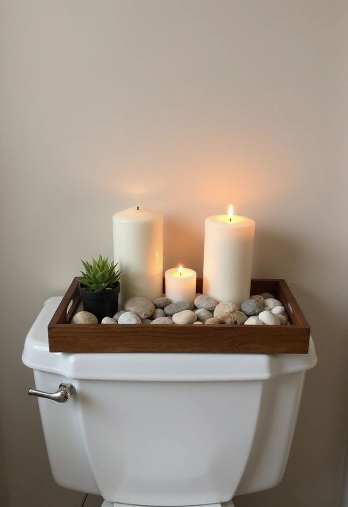
4. Use a Stone or Marble Accent
A stone accent can make a bathroom feel more polished.
Try a small marble-look tray, stone container, or decorative object.
This idea works especially well with white, gray, beige, and cream bathrooms because the natural-looking texture adds depth without introducing a completely different color.
If you already have marble countertops or tile, repeat that finish on a smaller scale for a cohesive appearance.
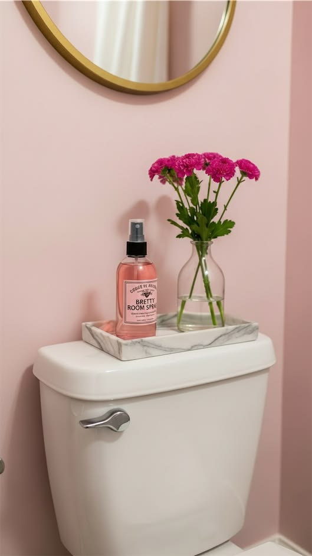
5. Add a Touch of Rustic Farmhouse Decor
If your bathroom has farmhouse styling, bring that personality onto the toilet tank.
Try a small wooden tray with a ceramic vase and a simple faux plant. You can also use aged-looking finishes, woven textures, or subtle vintage-inspired accessories.
I'd keep the arrangement restrained, though.
Farmhouse style doesn't require putting a miniature barn on every available surface. A few carefully chosen pieces create a much cleaner result.
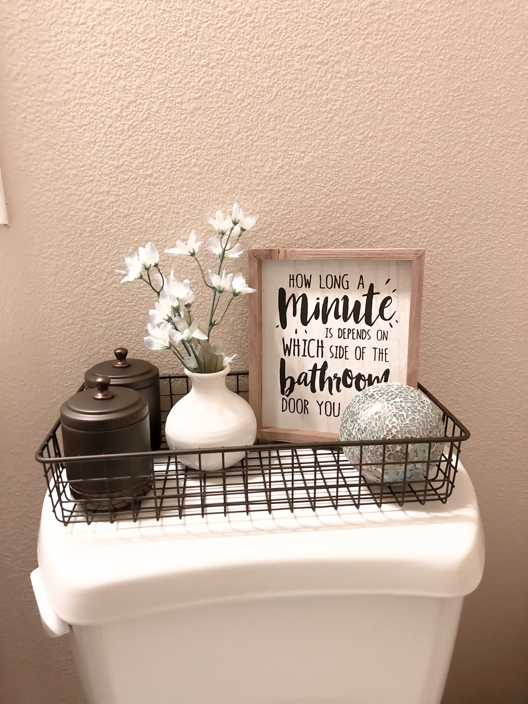
6. Create a Modern Black and White Display
For a modern bathroom, keep the toilet tank arrangement extremely simple.
Try a black ceramic vase, white candle, and small green plant.
The contrast creates a crisp look without adding unnecessary color.
This combination works especially well when the bathroom already features black hardware, such as a black mirror frame, faucet, shower fixtures, or cabinet handles.
The repetition helps connect the toilet area with the rest of the room.
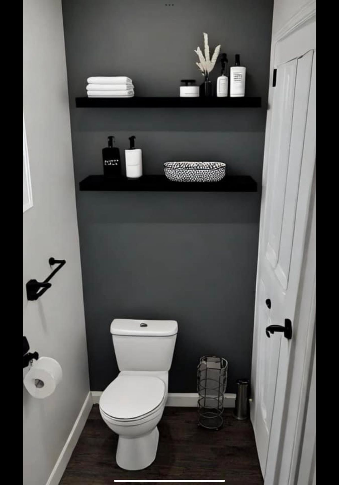
7. Add a Small Decorative Bowl
A shallow decorative bowl can work surprisingly well on a toilet tank.
Look for ceramic, stone, or wood designs with a simple shape. You could leave the bowl empty or place a few decorative items inside it.
Personally, I like an empty bowl more than one filled with random objects. Bathroom decor can go from "intentional" to "junk drawer" incredibly quickly.
Choose one beautiful bowl and let it do the work.
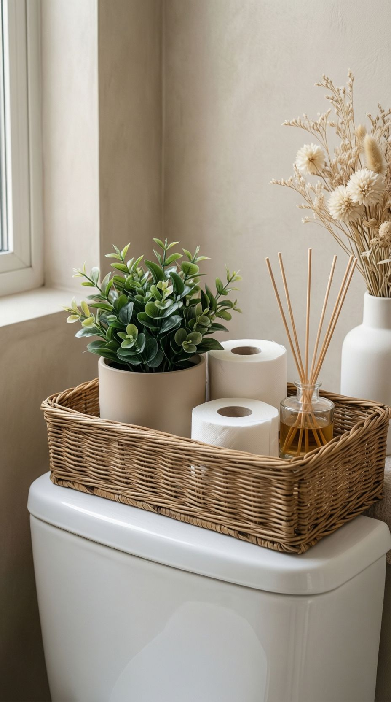
8. Style the Toilet Tank With Eucalyptus
Eucalyptus brings a spa-like feeling to bathroom decor.
You can place a few faux eucalyptus stems inside a small ceramic vase. If you use fresh eucalyptus, remember that bathroom humidity can affect how quickly plant material changes.
I prefer faux stems for this particular spot because they require almost no maintenance.
Pair green eucalyptus with a white ceramic vase for an especially clean and calming combination.

9. Add a Small Woven Basket
A tiny woven basket can bring natural texture to an otherwise hard-looking bathroom.
Use one that fits comfortably on the tank and doesn't interfere with the flush mechanism.
I'd choose a basket with a relatively tight weave because it collects less dust than extremely loose decorative baskets.
You can leave it empty or use it for a small rolled hand towel if the size and placement make sense.
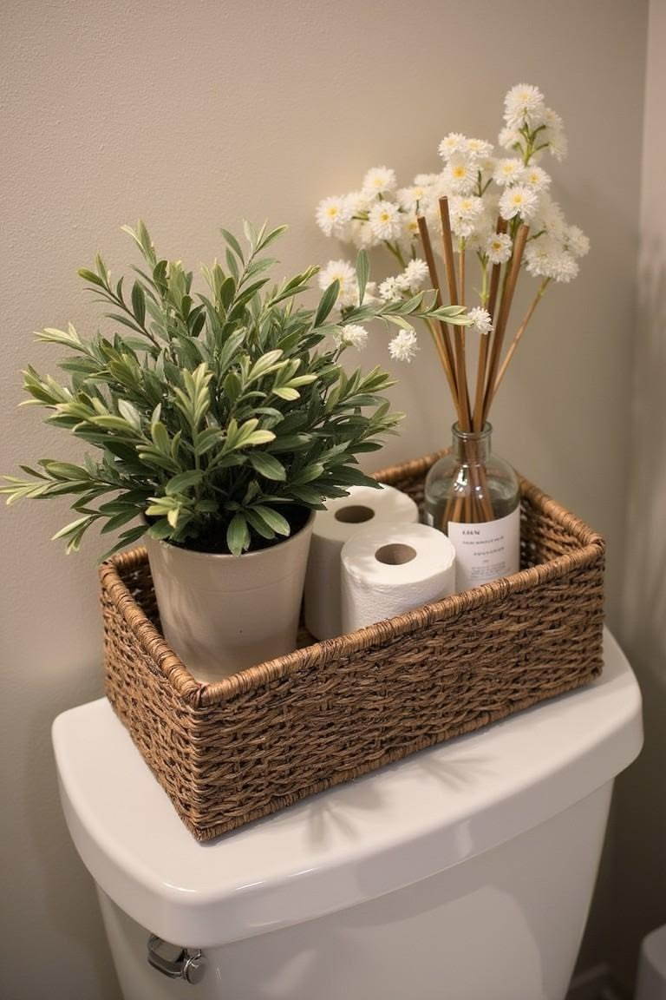
10. Create a Neutral Toilet Tank Arrangement
Neutral bathrooms can look incredibly sophisticated when you combine different textures.
Try pairing:
- A beige ceramic vase
- A small cream candle
- A wooden tray
- A tiny faux branch
The colors can stay within shades of white, beige, taupe, cream, and warm brown.
This approach works particularly well if you want that relaxed, designer-inspired bathroom look without buying an entire new vanity.
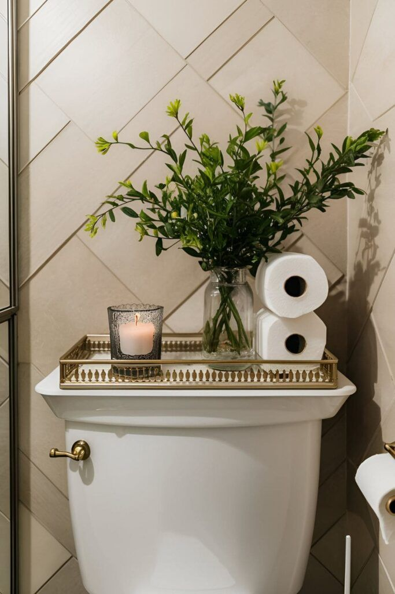
11. Use a Small Framed Print
If you want something more decorative, try a small framed artwork or print.
A tiny botanical illustration, abstract print, vintage-inspired artwork, or simple typography can add character without requiring another wall.
I like this approach when the bathroom already has plenty of functional accessories. Instead of adding another object, you introduce visual interest through artwork.
Choose a lightweight frame and keep it securely positioned.
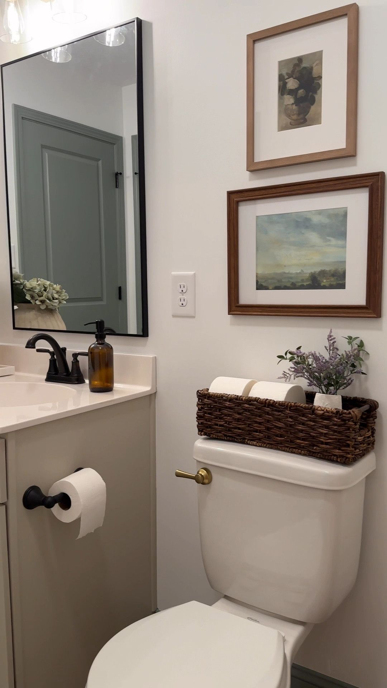
12. Try a Minimalist Bathroom Book Stack
A small stack of decorative books can create a relaxed, collected look.
Choose books with attractive neutral covers and keep the stack low. You could place a small decorative object on top, such as a ceramic bowl or tiny plant.
I'd avoid using valuable books here, though. Bathrooms produce moisture, and humidity doesn't exactly make paper happier.
Keep the arrangement small, stable, and easy to remove when cleaning.
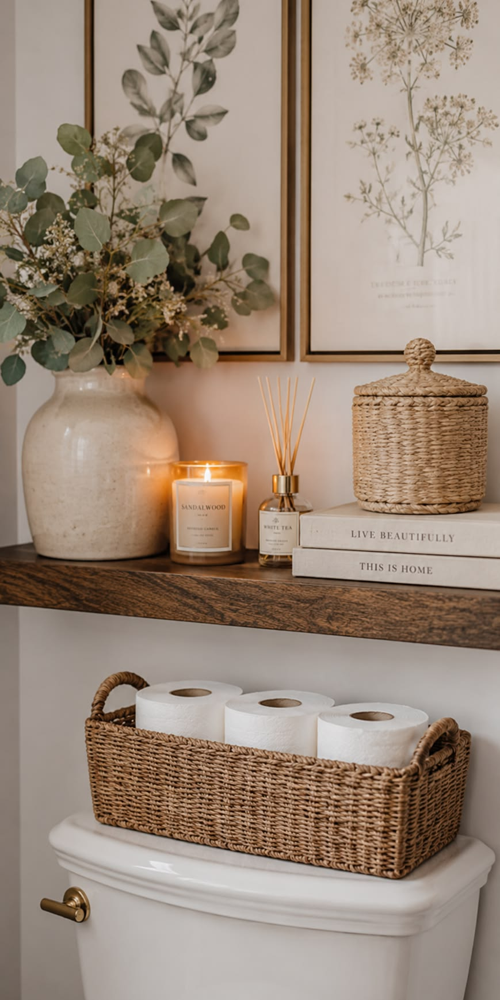
13. Add a Small Ceramic Vase
A little ceramic vase gives the tank some personality without requiring much space.
You can leave it empty for a minimalist look or add a few faux stems. I particularly like cream, beige, white, or muted green ceramics because they work beautifully with neutral bathrooms.
The key here involves scale.
A huge vase on a toilet tank looks less like intentional styling and more like the vase lost its way.
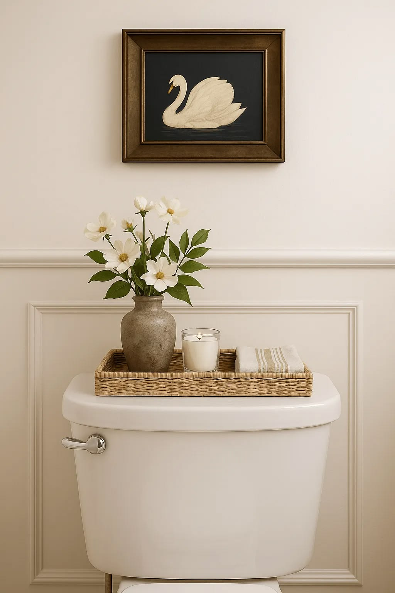
14. Style It With a Candle
A candle can add a surprisingly cozy touch to a bathroom.
Choose a small decorative candle in a glass or ceramic container. Neutral scents such as vanilla, linen, sandalwood, or eucalyptus can complement a relaxing bathroom atmosphere.
I prefer short candles rather than tall ones because the lower profile looks more balanced on a toilet tank.
If you rarely use the candle, you can also treat it purely as decorative bathroom styling.
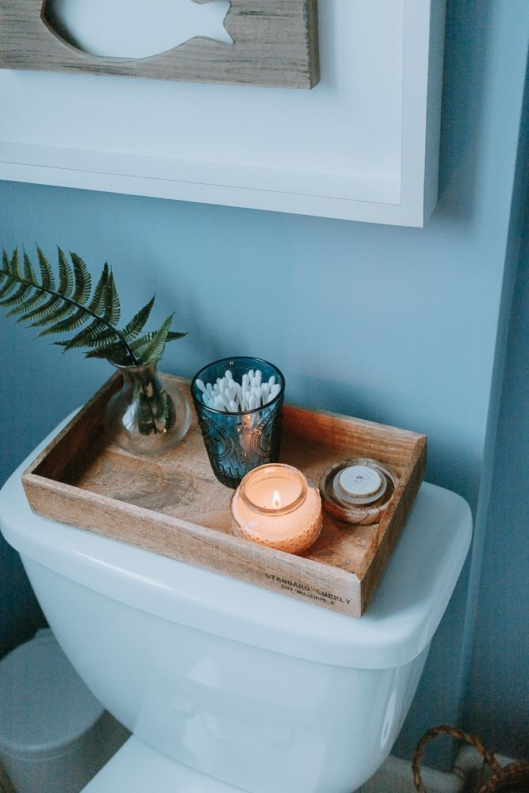
15. Use a Decorative Toilet Tank Tray
A tray gives your toilet tank a deliberate, organized appearance.
I like using a small rectangular or oval tray because it visually groups several objects together. Instead of having a candle, plant, and little container floating around separately, the tray makes them look like one arrangement.
Try materials such as:
- Light wood
- Marble-look ceramic
- Bamboo
- Stone
- Metal
For a warm neutral bathroom, I'd personally choose natural wood. It adds enough texture without competing with the rest of the room.
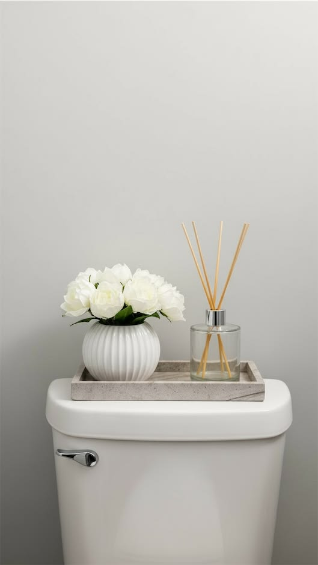
16. Add a Small Green Plant
A small plant can instantly make a toilet tank feel warmer.
I particularly like compact plants with simple leaves because they add color without overwhelming the space. A small pothos, snake plant, or another bathroom-friendly plant can work depending on the available light.
If your bathroom receives very little natural light, use a realistic faux plant instead. There's no prize for slowly killing a beautiful plant in a windowless bathroom.
Keep the pot small and choose a container that complements your bathroom finishes.
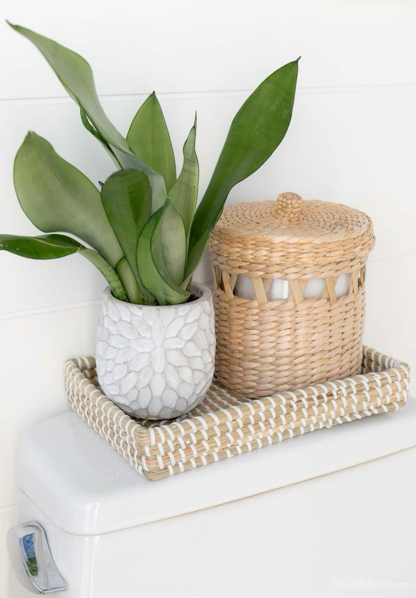
How Do You Decorate a Toilet Tank Without Making It Look Cluttered?
The easiest approach involves choosing one focal piece and one or two smaller accessories. You don't need to use every inch of the tank.
For example, you could pair a small plant with a candle. Or you could use a narrow tray with a soap dispenser-style container and a tiny decorative object.
Think about the rest of your bathroom, too. If you already have patterned shower curtains, colorful towels, and busy wall art, keep the toilet tank simple.
If your bathroom has a neutral palette, however, the tank gives you a nice opportunity to introduce texture through wood, ceramic, glass, woven materials, or greenery.
A bathroom is often the dampest area of a home, which is exactly why ventilation and drying damp surfaces regularly matters so much.
That's one reason I prefer easy-to-clean decorative pieces over anything porous or overly complicated.
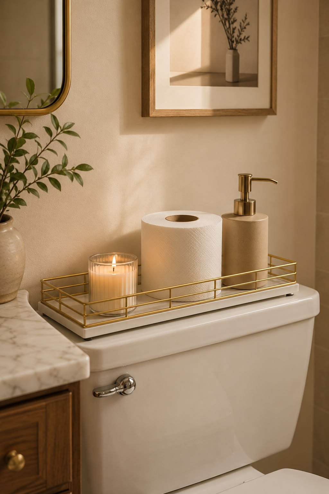
What Can You Put on Top of a Toilet Tank?
Before getting into specific toilet tank decorating ideas, let's talk about what actually works. The toilet tank gives you a small horizontal surface, so you need to think more like you're styling a tiny shelf than decorating a full bathroom cabinet.
I usually look for three things: scale, moisture resistance, and practicality. A small plant, decorative tray, candle, framed print, or a couple of attractive containers can work beautifully.
The key to mold control really is moisture control. That advice matters here because bathrooms naturally collect humidity. If you regularly take hot showers, keep the bathroom ventilated and choose decor that can handle occasional moisture.
I also avoid anything tall or unstable. Nobody wants to reach for toilet paper and accidentally knock a ceramic vase onto the floor. That turns "bathroom refresh" into "why did I do this?"
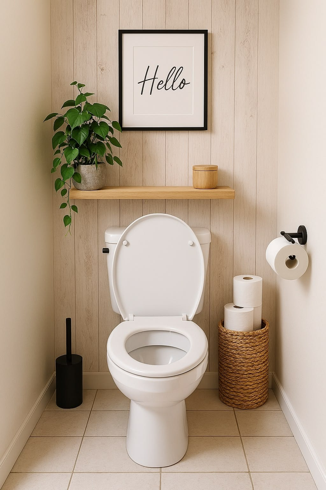
Final Thoughts on Toilet Tank Decorating Ideas
The best toilet tank decorating ideas don't require a huge budget or a bathroom renovation. A small plant, ceramic vase, decorative tray, candle, artwork, or carefully chosen accent can make the area feel finished.
My biggest tip involves restraint. Choose a few pieces that complement your bathroom instead of filling every available inch.
Think about the colors already in the room. Think about moisture. Think about how easily you can remove everything for cleaning. Most importantly, make sure your decor doesn't interfere with the toilet's function.
After all, the goal isn't to make your toilet tank the star of the bathroom.
It's really to make it look like it genuinely belongs there, like someone actually thought about it.
And honestly, that tiny difference can make the whole room feel much more polished, even though almost nobody consciously notices the toilet tank itself on their way in.